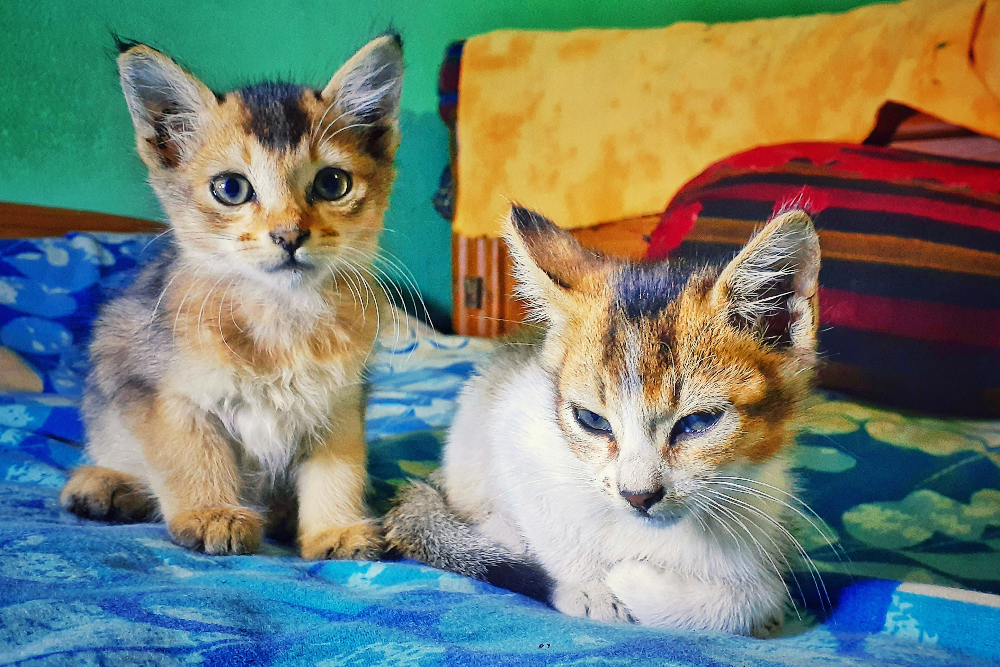
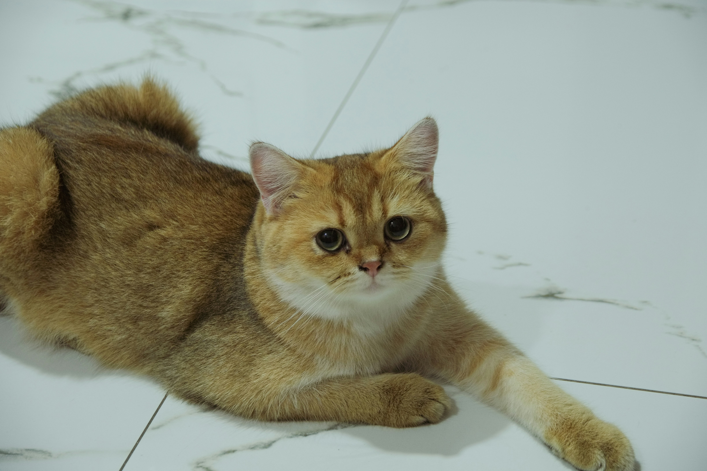

¡Bienvenido al Sistema de Adopción de Mascotas!
Conectamos familias amorosas con mascotas que buscan un hogar. Aquí puedes encontrar perros y gatos en adopción, o publicar un aviso si tienes una mascota que necesita una nueva familia.
Últimos 5 avisos de adopción
| Fecha publicación | Comuna | Sector | Cantidad Tipo edad | Foto |
|---|---|---|---|---|
| Santiago | Beauchef 850, terraza | 1 gato 2 meses |  |
|
| Ñuñoa | Plaza Ñuñoa | 3 perros 2 meses |  |
|
| Santiago | Parque O'Higgins | 2 gatos 1 mes |  | |
| La Florida | Av. Vicuña Mackenna | 1 perro 1 año |  |
|
| Providencia | Costanera Center | 1 gato 3 años |  |